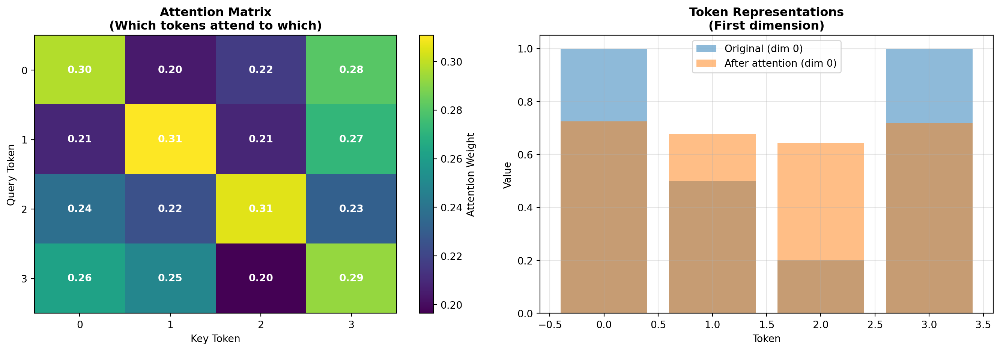

flowchart LR
start["üéØ Start Here"] --> part1["Part 1<br/>Single Neuron<br/>‚îÄ‚îÄ‚îÄ‚îÄ<br/>Activation<br/>Functions"]
part1 --> part2["Part 2<br/>Layers<br/>────<br/>Vectorization<br/>& Depth"]
part2 --> part3["Part 3<br/>Attention<br/>────<br/>Context-Aware<br/>Processing"]
part3 --> part4["Part 4<br/>Transformers<br/>────<br/>Complete<br/>Architecture"]
part4 --> end_goal["üéì Goal Achieved<br/>‚îÄ‚îÄ‚îÄ‚îÄ<br/>Understand GPT,<br/>BERT, GFMs"]
style start fill:#e1f5ff
style part1 fill:#e8f0ff
style part2 fill:#f0e1ff
style part3 fill:#ffe8e1
style part4 fill:#ffe1e1
style end_goal fill:#e1ffe1
Introduction
This guide builds your understanding of neural networks from the ground up, starting with how individual neurons process data, scaling to vectorized layer operations, and culminating in transformer architectures with attention mechanisms.
What you’ll learn: - How neurons transform data with activation functions - How vectorization makes processing efficient - Why attention is revolutionary for sequence modeling - How transformers combine these ideas into powerful models
Video Resources
For excellent visual explanations of neural networks, check out 3Blue1Brown’s Neural Networks series:
- But what is a neural network? - Foundation concepts
- Gradient descent, how neural networks learn - Training process
Part 1: The Individual Neuron
What Does a Neuron Do?
At its core, a neuron is a simple computational unit that:
- Takes multiple inputs
- Combines them with learned weights
- Adds a bias term
- Passes the result through an activation function
flowchart LR
subgraph inputs["Inputs"]
x1["x₁ = 1.5"]
x2["x₂ = 2.0"]
x3["x₃ = -0.5"]
end
subgraph weights["× Weights"]
w1["w₁ = 0.5"]
w2["w₂ = -1.0"]
w3["w₃ = 0.3"]
end
subgraph computation["Weighted Sum"]
sum["Σ(xᵢ × wᵢ) + b"]
bias["+ bias (0.5)"]
end
subgraph activation["Activation"]
z["z = -0.35"]
act["f(z)"]
output["Output"]
end
x1 --> w1
x2 --> w2
x3 --> w3
w1 --> sum
w2 --> sum
w3 --> sum
bias --> sum
sum --> z
z --> act
act --> output
style inputs fill:#e1f5ff
style weights fill:#fff3e1
style computation fill:#f0e1ff
style activation fill:#e1ffe1
Key insight: A neuron is just a weighted sum followed by a non-linear function. That’s it!
Let’s see this in action with code:
import numpy as np
import matplotlib.pyplot as plt
# A single neuron processes inputs
def single_neuron(inputs, weights, bias, activation_fn):
"""
Simulate a single neuron's computation.
Args:
inputs: array of input values
weights: array of weights (same length as inputs)
bias: single bias value
activation_fn: function to apply to weighted sum
Returns:
The neuron's output after activation
"""
# Step 1: Weighted sum
z = np.dot(inputs, weights) + bias
# Step 2: Apply activation function
output = activation_fn(z)
return output, z
# Example inputs and parameters
inputs = np.array([1.5, 2.0, -0.5])
weights = np.array([0.5, -1.0, 0.3])
bias = 0.5
# Without activation (just linear combination)
output_linear, z = single_neuron(inputs, weights, bias, lambda x: x)
print(f"Input values: {inputs}")
print(f"Weights: {weights}")
print(f"Bias: {bias}")
print(f"\nWeighted sum (z): {z:.3f}")
print(f"Linear output: {output_linear:.3f}")Input values: [ 1.5 2. -0.5]
Weights: [ 0.5 -1. 0.3]
Bias: 0.5
Weighted sum (z): -0.900
Linear output: -0.900What to notice: The neuron computes a weighted sum of its inputs plus a bias. Without an activation function, this is just a linear transformation—not very powerful for learning complex patterns.
Activation Functions: Adding Non-Linearity
Activation functions introduce non-linearity, which is crucial for neural networks to learn complex patterns. Let’s explore the most common ones:
# Define common activation functions
def relu(x):
"""ReLU: Rectified Linear Unit"""
return np.maximum(0, x)
def sigmoid(x):
"""Sigmoid: Squashes values to (0, 1)"""
return 1 / (1 + np.exp(-x))
def tanh(x):
"""Tanh: Squashes values to (-1, 1)"""
return np.tanh(x)
def leaky_relu(x, alpha=0.01):
"""Leaky ReLU: Like ReLU but allows small negative values"""
return np.where(x > 0, x, alpha * x)
# Visualize these functions
x = np.linspace(-5, 5, 100)
fig, axes = plt.subplots(2, 2, figsize=(12, 10))
# ReLU
axes[0, 0].plot(x, relu(x), 'b-', linewidth=2)
axes[0, 0].grid(True, alpha=0.3)
axes[0, 0].set_title('ReLU: max(0, x)', fontsize=12, fontweight='bold')
axes[0, 0].set_xlabel('Input (x)')
axes[0, 0].set_ylabel('Output')
axes[0, 0].axhline(y=0, color='k', linewidth=0.5)
axes[0, 0].axvline(x=0, color='k', linewidth=0.5)
# Sigmoid
axes[0, 1].plot(x, sigmoid(x), 'g-', linewidth=2)
axes[0, 1].grid(True, alpha=0.3)
axes[0, 1].set_title('Sigmoid: 1/(1+e^(-x))', fontsize=12, fontweight='bold')
axes[0, 1].set_xlabel('Input (x)')
axes[0, 1].set_ylabel('Output')
axes[0, 1].axhline(y=0.5, color='r', linewidth=0.5, linestyle='--', alpha=0.5)
# Tanh
axes[1, 0].plot(x, tanh(x), 'r-', linewidth=2)
axes[1, 0].grid(True, alpha=0.3)
axes[1, 0].set_title('Tanh: (e^x - e^(-x))/(e^x + e^(-x))', fontsize=12, fontweight='bold')
axes[1, 0].set_xlabel('Input (x)')
axes[1, 0].set_ylabel('Output')
axes[1, 0].axhline(y=0, color='k', linewidth=0.5)
# Leaky ReLU
axes[1, 1].plot(x, leaky_relu(x), 'm-', linewidth=2)
axes[1, 1].grid(True, alpha=0.3)
axes[1, 1].set_title('Leaky ReLU: max(0.01x, x)', fontsize=12, fontweight='bold')
axes[1, 1].set_xlabel('Input (x)')
axes[1, 1].set_ylabel('Output')
axes[1, 1].axhline(y=0, color='k', linewidth=0.5)
axes[1, 1].axvline(x=0, color='k', linewidth=0.5)
plt.tight_layout()
plt.show()What to notice:
- ReLU is the most popular: simple, fast, and effective. It “turns off” negative values completely.
- Sigmoid squashes values between 0 and 1, useful for probabilities.
- Tanh centers outputs around 0, often better than sigmoid for hidden layers.
- Leaky ReLU prevents “dead neurons” by allowing small negative values.
Seeing the Effect of Activation Functions
Let’s see how different activation functions transform our neuron’s output:
# Use the same inputs from before
inputs = np.array([1.5, 2.0, -0.5])
weights = np.array([0.5, -1.0, 0.3])
bias = 0.5
# Compute weighted sum
z = np.dot(inputs, weights) + bias
print(f"Weighted sum (z): {z:.3f}\n")
# Apply different activations
activations = {
'Linear (no activation)': lambda x: x,
'ReLU': relu,
'Sigmoid': sigmoid,
'Tanh': tanh,
'Leaky ReLU': leaky_relu
}
for name, fn in activations.items():
output = fn(z)
print(f"{name:25s}: {output:.3f}")Weighted sum (z): -0.900
Linear (no activation) : -0.900
ReLU : 0.000
Sigmoid : 0.289
Tanh : -0.716
Leaky ReLU : -0.009Why this matters: The activation function dramatically changes the neuron’s output. This non-linear transformation is what allows neural networks to learn complex, non-linear patterns in data.
Part 2: From Single Neurons to Layers
The Power of Vectorization
Rather than computing neurons one at a time, we can process an entire layer simultaneously using matrix operations. This is both computationally efficient and conceptually elegant.
flowchart TB
subgraph single["Single Neuron (Sequential)"]
direction LR
i1["Input<br/>Vector<br/>(3 dims)"] --> n1["Neuron 1"]
i2["Input<br/>Vector<br/>(3 dims)"] --> n2["Neuron 2"]
i3["Input<br/>Vector<br/>(3 dims)"] --> n3["Neuron 3"]
n1 --> o1["Output 1"]
n2 --> o2["Output 2"]
n3 --> o3["Output 3"]
end
subgraph vectorized["Vectorized Layer (Parallel)"]
direction LR
iv["Input<br/>Vector<br/>(3 dims)"] --> matrix["Weight Matrix<br/>(3 × 5)<br/>+ Bias<br/>+ Activation"]
matrix --> ov["Output<br/>Vector<br/>(5 dims)"]
end
single -.->|"Matrix Operation"| vectorized
style single fill:#ffe1e1
style vectorized fill:#e1ffe1
style matrix fill:#fff3e1
Key insight: Instead of looping through neurons, one matrix multiplication processes all neurons simultaneously!
Video Resource
For understanding how layers work together, see 3Blue1Brown’s Neural network intuitions (timestamp 7:00 onwards).
# A layer is just multiple neurons working in parallel
class NeuralLayer:
"""A single layer of neurons with vectorized operations."""
def __init__(self, n_inputs, n_neurons):
"""
Initialize a layer.
Args:
n_inputs: number of input features
n_neurons: number of neurons in this layer
"""
# Each neuron has n_inputs weights
# Shape: (n_inputs, n_neurons)
self.weights = np.random.randn(n_inputs, n_neurons) * 0.1
# Each neuron has one bias
# Shape: (n_neurons,)
self.biases = np.zeros(n_neurons)
def forward(self, inputs, activation_fn=relu):
"""
Forward pass through the layer.
Args:
inputs: input array of shape (n_samples, n_inputs)
activation_fn: activation function to apply
Returns:
outputs after activation, shape (n_samples, n_neurons)
"""
# Matrix multiplication: (n_samples, n_inputs) @ (n_inputs, n_neurons)
# Result: (n_samples, n_neurons)
z = np.dot(inputs, self.weights) + self.biases
# Apply activation function element-wise
return activation_fn(z)
# Create a layer with 3 inputs and 5 neurons
layer = NeuralLayer(n_inputs=3, n_neurons=5)
# Process a batch of 4 samples
batch_inputs = np.random.randn(4, 3)
outputs = layer.forward(batch_inputs, activation_fn=relu)
print(f"Input shape: {batch_inputs.shape}")
print(f"Weight matrix shape: {layer.weights.shape}")
print(f"Output shape: {outputs.shape}\n")
print("Sample input:")
print(batch_inputs[0])
print("\nCorresponding output:")
print(outputs[0])Input shape: (4, 3)
Weight matrix shape: (3, 5)
Output shape: (4, 5)
Sample input:
[-0.09917586 1.846637 -1.07008477]
Corresponding output:
[0. 0.14226798 0.04979847 0. 0.07559149]What to notice:
- The weight matrix has shape
(n_inputs, n_neurons)- each column represents one neuron’s weights. - One matrix multiplication processes all neurons and all samples simultaneously.
- Output shape is
(n_samples, n_neurons)- each sample gets transformed into a vector of neuron activations.
Building a Multi-Layer Network
Now let’s stack multiple layers to create a deep neural network:
flowchart LR
subgraph input["Input Layer"]
i1["x₁"]
i2["x₂"]
i3["x₃"]
end
subgraph hidden1["Hidden Layer 1<br/>(8 neurons)"]
h11["üîµ"]
h12["üîµ"]
h13["üîµ"]
h14["üîµ"]
h15["üîµ"]
h16["üîµ"]
h17["üîµ"]
h18["üîµ"]
end
subgraph hidden2["Hidden Layer 2<br/>(5 neurons)"]
h21["üü¢"]
h22["üü¢"]
h23["üü¢"]
h24["üü¢"]
h25["üü¢"]
end
subgraph output["Output Layer<br/>(2 neurons)"]
o1["üî¥"]
o2["üî¥"]
end
i1 --> h11 & h12 & h13 & h14 & h15 & h16 & h17 & h18
i2 --> h11 & h12 & h13 & h14 & h15 & h16 & h17 & h18
i3 --> h11 & h12 & h13 & h14 & h15 & h16 & h17 & h18
h11 & h12 & h13 & h14 & h15 & h16 & h17 & h18 --> h21 & h22 & h23 & h24 & h25
h21 & h22 & h23 & h24 & h25 --> o1 & o2
style input fill:#e1f5ff
style hidden1 fill:#e8e1ff
style hidden2 fill:#e1ffe8
style output fill:#ffe1e1
Key insight: Data flows forward through the network, with each layer creating progressively more abstract representations.
Now let’s implement this:
class SimpleNeuralNetwork:
"""A simple feedforward neural network."""
def __init__(self, layer_sizes):
"""
Args:
layer_sizes: list of layer sizes, e.g., [3, 8, 5, 2]
means 3 inputs, two hidden layers (8 and 5 neurons),
and 2 output neurons
"""
self.layers = []
for i in range(len(layer_sizes) - 1):
layer = NeuralLayer(layer_sizes[i], layer_sizes[i + 1])
self.layers.append(layer)
def forward(self, inputs):
"""Forward pass through all layers."""
activation = inputs
print("Forward pass through network:")
print(f"Input shape: {activation.shape}")
for i, layer in enumerate(self.layers):
# Use ReLU for hidden layers, linear for output
if i < len(self.layers) - 1:
activation = layer.forward(activation, activation_fn=relu)
else:
activation = layer.forward(activation, activation_fn=lambda x: x)
print(f"After layer {i+1}: {activation.shape}")
return activation
# Create a network: 3 inputs -> 8 hidden -> 5 hidden -> 2 outputs
network = SimpleNeuralNetwork([3, 8, 5, 2])
# Process a batch of data
batch = np.random.randn(4, 3)
output = network.forward(batch)
print(f"\nFinal output:\n{output}")Forward pass through network:
Input shape: (4, 3)
After layer 1: (4, 8)
After layer 2: (4, 5)
After layer 3: (4, 2)
Final output:
[[ 0.00230489 0.00411068]
[-0.00171528 0.00183165]
[ 0.01574223 0.01413083]
[ 0.00275095 0.00187454]]What to notice: - Each layer transforms the data: (batch, n_in) -> (batch, n_out) - The output of one layer becomes the input to the next - This creates a series of increasingly abstract representations
Visualizing the Transformation
Let’s see how data is transformed as it flows through the network:
# Create a simpler network for visualization
viz_network = SimpleNeuralNetwork([2, 4, 3, 2])
# Create some structured input data
theta = np.linspace(0, 2*np.pi, 100)
inputs = np.column_stack([np.cos(theta), np.sin(theta)])
# Track activations at each layer
activations = [inputs]
current = inputs
for i, layer in enumerate(viz_network.layers):
if i < len(viz_network.layers) - 1:
current = layer.forward(current, activation_fn=relu)
else:
current = layer.forward(current, activation_fn=lambda x: x)
activations.append(current)
# Visualize the transformations
fig, axes = plt.subplots(1, 4, figsize=(16, 4))
for i, (ax, act) in enumerate(zip(axes, activations)):
if i == 0:
title = "Input Space"
elif i == len(activations) - 1:
title = "Output Space"
else:
title = f"Hidden Layer {i}"
# Plot first two dimensions
ax.scatter(act[:, 0], act[:, 1], c=theta, cmap='viridis', s=20)
ax.set_title(title, fontsize=12, fontweight='bold')
ax.set_xlabel('Dimension 1')
ax.set_ylabel('Dimension 2')
ax.grid(True, alpha=0.3)
ax.axis('equal')
plt.tight_layout()
plt.show()What to notice: Each layer progressively transforms the data, creating new representations. The network learns to map inputs to outputs through these transformations.
Part 3: Attention Mechanisms and Transformers
The Limitation of Basic Neural Networks
Traditional feedforward networks process each input independently. But what if relationships between inputs matter? This is where attention mechanisms come in.
Video Resource
For an excellent visual explanation of attention and transformers, watch: - Attention in transformers, visually explained by 3Blue1Brown - Visualizing Attention, a Transformer’s Heart (full explanation)
What is Attention?
Attention allows the network to focus on relevant parts of the input when processing each element. Think of reading a sentence: to understand “it,” you need to look back and find what “it” refers to.
flowchart TB
subgraph input["Input Sequence"]
t1["Token 1"]
t2["Token 2"]
t3["Token 3"]
t4["Token 4"]
end
subgraph qkv["Linear Projections"]
direction LR
q["Query (Q)<br/>What I'm looking for"]
k["Key (K)<br/>What I offer"]
v["Value (V)<br/>What I return"]
end
subgraph attention["Attention Computation"]
similarity["Compute Similarity<br/>Q · Kᵀ"]
weights["Softmax<br/>(Attention Weights)"]
output["Weighted Sum<br/>Σ(weights × V)"]
end
subgraph result["Context-Aware Output"]
o1["Output 1<br/>(informed by all tokens)"]
o2["Output 2<br/>(informed by all tokens)"]
o3["Output 3<br/>(informed by all tokens)"]
o4["Output 4<br/>(informed by all tokens)"]
end
t1 & t2 & t3 & t4 --> qkv
qkv --> similarity
similarity --> weights
weights --> output
output --> o1 & o2 & o3 & o4
style input fill:#e1f5ff
style qkv fill:#fff3e1
style attention fill:#f0e1ff
style result fill:#e1ffe1
Key insight: Each token can “attend to” (look at) all other tokens, deciding which are most relevant for its own representation.
def simple_attention(query, keys, values):
"""
Simplified attention mechanism.
Args:
query: what we're looking for (n_queries, d_k)
keys: what we're comparing against (n_keys, d_k)
values: what we return (n_keys, d_v)
Returns:
weighted combination of values
"""
# Step 1: Compute similarity scores
# How much does each key match the query?
scores = np.dot(query, keys.T) # (n_queries, n_keys)
# Step 2: Convert to attention weights (softmax)
# Scale by sqrt of dimension for stability
d_k = keys.shape[1]
scores = scores / np.sqrt(d_k)
attention_weights = np.exp(scores) / np.exp(scores).sum(axis=1, keepdims=True)
# Step 3: Weighted sum of values
output = np.dot(attention_weights, values) # (n_queries, d_v)
return output, attention_weights
# Example: A simple sequence
# Let's say we have 4 tokens (words), each represented by a 3D vector
sequence = np.array([
[1.0, 0.0, 0.5], # Token 0
[0.5, 1.0, 0.2], # Token 1
[0.2, 0.3, 1.0], # Token 2
[1.0, 0.5, 0.3], # Token 3
])
# Let's see what Token 2 attends to
query = sequence[2:3] # Query is Token 2
keys = sequence # Keys are all tokens
values = sequence # Values are all tokens (simplified)
output, attention_weights = simple_attention(query, keys, values)
print("Attention weights for Token 2:")
for i, weight in enumerate(attention_weights[0]):
print(f" Token {i}: {weight:.3f}")
print(f"\nOriginal Token 2: {sequence[2]}")
print(f"After attention: {output[0]}")Attention weights for Token 2:
Token 0: 0.238
Token 1: 0.225
Token 2: 0.305
Token 3: 0.231
Original Token 2: [0.2 0.3 1. ]
After attention: [0.64324521 0.43223908 0.53893462]What to notice: - The attention weights sum to 1.0 - Token 2 attends most to itself, but also considers other tokens - The output is a weighted combination - it’s been “informed” by the context
Visualizing Attention Patterns
# Compute full attention matrix (all tokens attending to all tokens)
all_queries = sequence
all_keys = sequence
all_values = sequence
outputs, full_attention = simple_attention(all_queries, all_keys, all_values)
# Visualize the attention matrix
fig, (ax1, ax2) = plt.subplots(1, 2, figsize=(14, 5))
# Attention matrix
im = ax1.imshow(full_attention, cmap='viridis', aspect='auto')
ax1.set_title('Attention Matrix\n(Which tokens attend to which)',
fontsize=12, fontweight='bold')
ax1.set_xlabel('Key Token')
ax1.set_ylabel('Query Token')
ax1.set_xticks(range(4))
ax1.set_yticks(range(4))
plt.colorbar(im, ax=ax1, label='Attention Weight')
# Add values to cells
for i in range(4):
for j in range(4):
text = ax1.text(j, i, f'{full_attention[i, j]:.2f}',
ha="center", va="center", color="white", fontweight='bold')
# Show transformation
ax2.bar(range(4), sequence[:, 0], alpha=0.5, label='Original (dim 0)')
ax2.bar(range(4), outputs[:, 0], alpha=0.5, label='After attention (dim 0)')
ax2.set_title('Token Representations\n(First dimension)',
fontsize=12, fontweight='bold')
ax2.set_xlabel('Token')
ax2.set_ylabel('Value')
ax2.legend()
ax2.grid(True, alpha=0.3)
plt.tight_layout()
plt.show()Intel MKL WARNING: Support of Intel(R) Streaming SIMD Extensions 4.2 (Intel(R) SSE4.2) enabled only processors has been deprecated. Intel oneAPI Math Kernel Library 2025.0 will require Intel(R) Advanced Vector Extensions (Intel(R) AVX) instructions.
What to notice: The attention matrix shows which tokens influence each other. Diagonal values are often high (tokens attend to themselves), but off-diagonal values capture contextual relationships.
Multi-Head Attention
Transformers use multiple attention heads to capture different types of relationships simultaneously.
flowchart TB
subgraph input_seq["Input Sequence (d_model = 512)"]
seq["Token 1, Token 2, ..., Token n"]
end
subgraph linear_proj["Linear Projections"]
wq["W_Q"]
wk["W_K"]
wv["W_V"]
end
subgraph heads["Split into Multiple Heads (e.g., 8 heads × 64 dims)"]
direction LR
head1["Head 1<br/>üîµ<br/>Attends to<br/>Syntax"]
head2["Head 2<br/>üü¢<br/>Attends to<br/>Semantics"]
head3["Head 3<br/>üü°<br/>Attends to<br/>Position"]
dots["..."]
head8["Head 8<br/>üî¥<br/>Attends to<br/>Context"]
end
subgraph attention_ops["Parallel Attention Operations"]
att1["Attention<br/>Computation"]
att2["Attention<br/>Computation"]
att3["Attention<br/>Computation"]
att4["Attention<br/>Computation"]
end
subgraph concat["Concatenate Heads"]
combined["Combined Output<br/>(8 heads × 64 = 512 dims)"]
end
subgraph final["Final Projection"]
wo["W_O<br/>(512 × 512)"]
output["Context-Aware<br/>Representations"]
end
seq --> linear_proj
linear_proj --> heads
head1 --> att1
head2 --> att2
head3 --> att3
head8 --> att4
att1 & att2 & att3 & att4 --> combined
combined --> wo
wo --> output
style input_seq fill:#e1f5ff
style linear_proj fill:#fff3e1
style heads fill:#f0e1ff
style attention_ops fill:#ffe1f0
style concat fill:#e1ffe8
style final fill:#e1ffe1
Key insight: Multiple heads can learn different attention patterns - some might focus on nearby words, others on distant relationships, enabling richer representations.
class MultiHeadAttention:
"""Multi-head attention mechanism."""
def __init__(self, d_model, n_heads):
"""
Args:
d_model: dimension of the model (e.g., 512)
n_heads: number of attention heads (e.g., 8)
"""
self.n_heads = n_heads
self.d_model = d_model
self.d_k = d_model // n_heads # dimension per head
# Linear projections for Q, K, V
self.W_q = np.random.randn(d_model, d_model) * 0.1
self.W_k = np.random.randn(d_model, d_model) * 0.1
self.W_v = np.random.randn(d_model, d_model) * 0.1
self.W_o = np.random.randn(d_model, d_model) * 0.1
def split_heads(self, x):
"""Split the last dimension into (n_heads, d_k)."""
batch_size, seq_len, d_model = x.shape
# Reshape to (batch_size, seq_len, n_heads, d_k)
x = x.reshape(batch_size, seq_len, self.n_heads, self.d_k)
# Transpose to (batch_size, n_heads, seq_len, d_k)
return x.transpose(0, 2, 1, 3)
def attention(self, q, k, v):
"""Scaled dot-product attention."""
d_k = q.shape[-1]
scores = np.matmul(q, k.transpose(0, 1, 3, 2)) / np.sqrt(d_k)
attention_weights = np.exp(scores) / np.exp(scores).sum(axis=-1, keepdims=True)
output = np.matmul(attention_weights, v)
return output, attention_weights
def forward(self, x):
"""
Forward pass.
Args:
x: input tensor of shape (batch_size, seq_len, d_model)
Returns:
output of shape (batch_size, seq_len, d_model)
"""
batch_size, seq_len, _ = x.shape
# Linear projections
q = np.dot(x, self.W_q)
k = np.dot(x, self.W_k)
v = np.dot(x, self.W_v)
# Split into multiple heads
q = self.split_heads(q.reshape(batch_size, seq_len, self.d_model))
k = self.split_heads(k.reshape(batch_size, seq_len, self.d_model))
v = self.split_heads(v.reshape(batch_size, seq_len, self.d_model))
# Apply attention
attended, attention_weights = self.attention(q, k, v)
# Concatenate heads
attended = attended.transpose(0, 2, 1, 3)
concatenated = attended.reshape(batch_size, seq_len, self.d_model)
# Final linear projection
output = np.dot(concatenated, self.W_o)
return output, attention_weights
# Create multi-head attention
d_model = 8
n_heads = 2
mha = MultiHeadAttention(d_model, n_heads)
# Process a sequence
batch_size = 1
seq_len = 4
x = np.random.randn(batch_size, seq_len, d_model)
output, attention_weights = mha.forward(x)
print(f"Input shape: {x.shape}")
print(f"Output shape: {output.shape}")
print(f"Attention weights shape: {attention_weights.shape}")
print(f"\nNumber of heads: {n_heads}")
print(f"Each head attends to sequence of length: {seq_len}")Input shape: (1, 4, 8)
Output shape: (1, 4, 8)
Attention weights shape: (1, 2, 4, 4)
Number of heads: 2
Each head attends to sequence of length: 4What to notice:
- Each head learns different attention patterns
- Multiple heads capture multiple types of relationships simultaneously
- This is much more powerful than single-head attention
How Attention Changes Encodings
Let’s see how attention modifies representations compared to a simple feedforward layer:
flowchart TB
subgraph comparison["Processing Paradigms"]
direction LR
subgraph ff["Feedforward Network"]
direction TB
ff_input["Token 1 | Token 2 | Token 3 | Token 4"]
ff_process["↓ Independent Processing ↓"]
ff_layer["Layer applies SAME transformation<br/>to each position separately"]
ff_output["Output 1 | Output 2 | Output 3 | Output 4"]
ff_note["❌ No communication between positions"]
ff_input --> ff_process
ff_process --> ff_layer
ff_layer --> ff_output
ff_output --> ff_note
end
subgraph attn["Attention Network"]
direction TB
attn_input["Token 1 | Token 2 | Token 3 | Token 4"]
attn_process["↓ Context-Aware Processing ↓"]
attn_layer["Each position looks at ALL positions<br/>Weighted combination based on relevance"]
attn_output["Output 1 | Output 2 | Output 3 | Output 4"]
attn_note["✅ Each output informed by full context"]
attn_input --> attn_process
attn_process --> attn_layer
attn_layer --> attn_output
attn_output --> attn_note
end
end
subgraph examples["Real-World Example"]
direction LR
sentence["'The animal didn't cross the street because it was too tired'"]
ff_ex["Feedforward: 'it' processed in isolation<br/>❌ Can't determine if 'it' = animal or street"]
attn_ex["Attention: 'it' attends to all words<br/>✅ Learns 'it' → 'animal' (via context)"]
sentence --> ff_ex
sentence --> attn_ex
end
style ff fill:#ffe1e1
style attn fill:#e1ffe1
style ff_note fill:#ffcccc
style attn_note fill:#ccffcc
style examples fill:#fff9e1
Why this is revolutionary: Attention allows the network to dynamically route information based on context, rather than applying fixed transformations. This is essential for understanding language, time series, and sequential data where relationships between elements matter.
# Create sample sequence data
np.random.seed(42)
seq_length = 6
d_model = 8
# Input sequence
input_seq = np.random.randn(1, seq_length, d_model)
# Option 1: Process with feedforward layer (no attention)
ff_layer = NeuralLayer(d_model, d_model)
ff_output = ff_layer.forward(input_seq.reshape(-1, d_model), activation_fn=relu)
ff_output = ff_output.reshape(1, seq_length, d_model)
# Option 2: Process with attention
mha = MultiHeadAttention(d_model, n_heads=2)
attn_output, attn_weights = mha.forward(input_seq)
# Visualize the difference
fig, axes = plt.subplots(1, 3, figsize=(16, 4))
# Input
im0 = axes[0].imshow(input_seq[0].T, cmap='RdBu', aspect='auto', vmin=-2, vmax=2)
axes[0].set_title('Input Sequence', fontsize=12, fontweight='bold')
axes[0].set_xlabel('Position in Sequence')
axes[0].set_ylabel('Feature Dimension')
plt.colorbar(im0, ax=axes[0])
# Feedforward output
im1 = axes[1].imshow(ff_output[0].T, cmap='RdBu', aspect='auto', vmin=-2, vmax=2)
axes[1].set_title('After Feedforward Layer\n(No attention)', fontsize=12, fontweight='bold')
axes[1].set_xlabel('Position in Sequence')
axes[1].set_ylabel('Feature Dimension')
plt.colorbar(im1, ax=axes[1])
# Attention output
im2 = axes[2].imshow(attn_output[0].T, cmap='RdBu', aspect='auto', vmin=-2, vmax=2)
axes[2].set_title('After Multi-Head Attention\n(Context-aware)', fontsize=12, fontweight='bold')
axes[2].set_xlabel('Position in Sequence')
axes[2].set_ylabel('Feature Dimension')
plt.colorbar(im2, ax=axes[2])
plt.tight_layout()
plt.show()
# Show how representations relate to each other
print("\nCosine similarity between position encodings:\n")
print("Feedforward (independent processing):")
ff_norm = ff_output[0] / np.linalg.norm(ff_output[0], axis=1, keepdims=True)
ff_similarity = np.dot(ff_norm, ff_norm.T)
print(f"Average off-diagonal similarity: {(ff_similarity.sum() - seq_length) / (seq_length * (seq_length - 1)):.3f}")
print("\nAttention (context-aware processing):")
attn_norm = attn_output[0] / np.linalg.norm(attn_output[0], axis=1, keepdims=True)
attn_similarity = np.dot(attn_norm, attn_norm.T)
print(f"Average off-diagonal similarity: {(attn_similarity.sum() - seq_length) / (seq_length * (seq_length - 1)):.3f}")
Cosine similarity between position encodings:
Feedforward (independent processing):
Average off-diagonal similarity: 0.421
Attention (context-aware processing):
Intel MKL WARNING: Support of Intel(R) Streaming SIMD Extensions 4.2 (Intel(R) SSE4.2) enabled only processors has been deprecated. Intel oneAPI Math Kernel Library 2025.0 will require Intel(R) Advanced Vector Extensions (Intel(R) AVX) instructions.
Intel MKL WARNING: Support of Intel(R) Streaming SIMD Extensions 4.2 (Intel(R) SSE4.2) enabled only processors has been deprecated. Intel oneAPI Math Kernel Library 2025.0 will require Intel(R) Advanced Vector Extensions (Intel(R) AVX) instructions.
Average off-diagonal similarity: 0.998Why this matters:
- Feedforward layers process each position independently - no position “knows” about others
- Attention layers mix information across positions - each position is informed by context
- This context-awareness is crucial for sequential data like language, time series, or video
Part 4: Putting It All Together - The Transformer Block
A complete transformer block combines attention with feedforward layers:
flowchart TB
input["Input<br/>(Sequence of Embeddings)"]
subgraph mha_block["Multi-Head Attention Block"]
mha["Multi-Head<br/>Attention"]
add1["Add"]
norm1["Layer Norm"]
end
subgraph ff_block["Feedforward Block"]
ff1["Linear<br/>(expand)"]
relu["ReLU"]
ff2["Linear<br/>(project)"]
add2["Add"]
norm2["Layer Norm"]
end
output["Output<br/>(Enriched Representations)"]
input --> mha
input -.->|"Residual<br/>Connection"| add1
mha --> add1
add1 --> norm1
norm1 --> ff1
ff1 --> relu
relu --> ff2
norm1 -.->|"Residual<br/>Connection"| add2
ff2 --> add2
add2 --> norm2
norm2 --> output
style input fill:#e1f5ff
style mha_block fill:#f0e1ff
style ff_block fill:#ffe8e1
style output fill:#e1ffe1
style mha fill:#d8b3ff
style add1 fill:#ffd8b3
style add2 fill:#ffd8b3
Key components:
- Multi-Head Attention: Mix information across positions (context)
- Residual Connection: Add input back to help gradient flow
- Layer Normalization: Stabilize training
- Feedforward Network: Transform features independently
- Another Residual Connection: More gradient flow
This pattern repeats for each transformer layer in a model!
class TransformerBlock:
"""A single transformer block with attention and feedforward."""
def __init__(self, d_model, n_heads, d_ff):
"""
Args:
d_model: model dimension
n_heads: number of attention heads
d_ff: feedforward network dimension
"""
self.attention = MultiHeadAttention(d_model, n_heads)
self.ff1 = NeuralLayer(d_model, d_ff)
self.ff2 = NeuralLayer(d_ff, d_model)
def forward(self, x):
"""
Forward pass through transformer block.
Args:
x: input of shape (batch_size, seq_len, d_model)
Returns:
output of same shape as input
"""
batch_size, seq_len, d_model = x.shape
# Step 1: Multi-head attention
attn_out, attn_weights = self.attention.forward(x)
# Step 2: Add & Norm (simplified - just add)
x = x + attn_out
# Step 3: Feedforward network
# Reshape for layer processing
x_flat = x.reshape(-1, d_model)
ff_out = self.ff1.forward(x_flat, activation_fn=relu)
ff_out = self.ff2.forward(ff_out, activation_fn=lambda x: x)
ff_out = ff_out.reshape(batch_size, seq_len, d_model)
# Step 4: Add & Norm (simplified - just add)
output = x + ff_out
return output, attn_weights
# Create and test a transformer block
transformer = TransformerBlock(d_model=8, n_heads=2, d_ff=16)
# Process a sequence
input_seq = np.random.randn(1, 6, 8)
output, attention = transformer.forward(input_seq)
print(f"Input shape: {input_seq.shape}")
print(f"Output shape: {output.shape}")
print("\nTransformer block completed:")
print(" 1. Multi-head attention (context mixing)")
print(" 2. Residual connection")
print(" 3. Feedforward network (feature transformation)")
print(" 4. Residual connection")Input shape: (1, 6, 8)
Output shape: (1, 6, 8)
Transformer block completed:
1. Multi-head attention (context mixing)
2. Residual connection
3. Feedforward network (feature transformation)
4. Residual connectionWhat to notice: The transformer combines two key ideas:
- Attention: Mix information across sequence positions (capture context)
- Feedforward: Transform features independently at each position (extract patterns)
- Residual connections: Add the input back to help gradients flow
Summary: The Neural Network Hierarchy
Let’s recap the progressive complexity:
flowchart TD
subgraph level1["Level 1: Single Neuron"]
n1["Weighted Sum<br/>+ Activation<br/>────<br/>z = Σ(wᵢxᵢ) + b<br/>output = f(z)"]
end
subgraph level2["Level 2: Neural Layer"]
layer["Vectorized Operations<br/>────<br/>Multiple neurons in parallel<br/>Matrix: (n_in, n_out)"]
end
subgraph level3["Level 3: Deep Network"]
deep["Stacked Layers<br/>────<br/>Input → Hidden₁ → Hidden₂ → Output<br/>Hierarchical features"]
end
subgraph level4a["Level 4a: Attention Mechanism"]
attention["Query-Key-Value<br/>────<br/>Context-aware weighting<br/>Tokens attend to each other"]
end
subgraph level4b["Level 4b: Multi-Head Attention"]
multihead["Parallel Attention Heads<br/>────<br/>Multiple relationship types<br/>8 heads × 64 dims = 512 dims"]
end
subgraph level5["Level 5: Transformer Block"]
transformer["Complete Architecture<br/>────<br/>Multi-Head Attention<br/>+ Residual Connection<br/>+ Feedforward Network<br/>+ Residual Connection"]
end
subgraph level6["Level 6: Full Transformer"]
full["Stack of N Blocks<br/>────<br/>Block₁ → Block₂ → ... → Blockₙ<br/>+ Positional Encoding<br/>+ Output Head"]
end
level1 -.->|"Parallelize"| level2
level2 -.->|"Stack"| level3
level3 -.->|"Add Context<br/>Awareness"| level4a
level4a -.->|"Multiple<br/>Heads"| level4b
level4b -.->|"+ Feedforward<br/>+ Residuals"| level5
level5 -.->|"Stack<br/>Layers"| level6
capability1["Independent<br/>Processing"] -.-> level1
capability2["Batch<br/>Processing"] -.-> level2
capability3["Hierarchical<br/>Features"] -.-> level3
capability4["Sequential<br/>Dependencies"] -.-> level4a
capability5["Rich<br/>Relationships"] -.-> level4b
capability6["Stable Deep<br/>Learning"] -.-> level5
capability7["Complex<br/>Understanding"] -.-> level6
style level1 fill:#e1f5ff
style level2 fill:#e8f0ff
style level3 fill:#e8e5ff
style level4a fill:#f0e1ff
style level4b fill:#f8e1ff
style level5 fill:#ffe1f0
style level6 fill:#ffe1e1
style capability1 fill:#fff9e1
style capability2 fill:#fff9e1
style capability3 fill:#fff9e1
style capability4 fill:#fff9e1
style capability5 fill:#fff9e1
style capability6 fill:#fff9e1
style capability7 fill:#fff9e1
Level 1: Single Neuron
- Computes weighted sum of inputs
- Applies activation function (e.g., ReLU)
- Transforms: scalar inputs → scalar output
- Key insight: Non-linearity enables learning complex patterns
Level 2: Layer of Neurons
- Multiple neurons computed in parallel (vectorized)
- Matrix multiplication: efficient batch processing
- Transforms: vector input → vector output
- Key insight: Multiple features extracted simultaneously
Level 3: Multi-Layer Network
- Stack layers to create deep representations
- Each layer builds on previous abstractions
- Transforms: input space → hidden spaces → output space
- Key insight: Depth creates hierarchical features
Level 4: Attention & Transformers
- Attention: dynamically weight inputs based on context
- Multi-head: capture multiple relationship types
- Transformer: attention + feedforward with residual connections
- Key insight: Context-aware processing for sequential data
The Key Difference
Traditional Neural Networks: Process each input independently
- Good for: images, tabular data where position doesn’t matter
Transformers with Attention: Process inputs in context of each other
- Good for: language, time series, any sequential data
- Revolution: Enables models like GPT, BERT, and modern GFMs
Interactive Exploration
Try This Yourself
Experiment with the code above:
- Activation functions: Change the activation in
single_neuron()and observe output changes - Layer sizes: Modify
layer_sizesinSimpleNeuralNetwork- what happens with very wide or very deep networks? - Attention heads: Increase
n_headsinMultiHeadAttention- do patterns change? - Sequence length: Use longer sequences in attention examples - observe attention patterns
These experiments will deepen your intuition about how neural networks transform data.
Further Resources
Video Explanations (3Blue1Brown)
- Neural Networks - Core concepts
- Gradient Descent - How networks learn
- Backpropagation - How gradients flow
- Attention & Transformers - Modern architecture
Key Papers
- “Attention Is All You Need” (Vaswani et al., 2017) - The original transformer paper
- “Deep Residual Learning” (He et al., 2015) - Residual connections
- “Understanding Deep Learning Requires Rethinking Generalization” (Zhang et al., 2017)
Next Steps in This Course
- Week 2: Spatial-temporal attention for geospatial data
- Week 3: Vision Transformers adapted for satellite imagery
- Week 4: Pretraining strategies (masked autoencoders)
This explainer is designed to build progressive understanding. Each section assumes you’ve understood the previous ones. Take time to run the code, observe the outputs, and experiment!